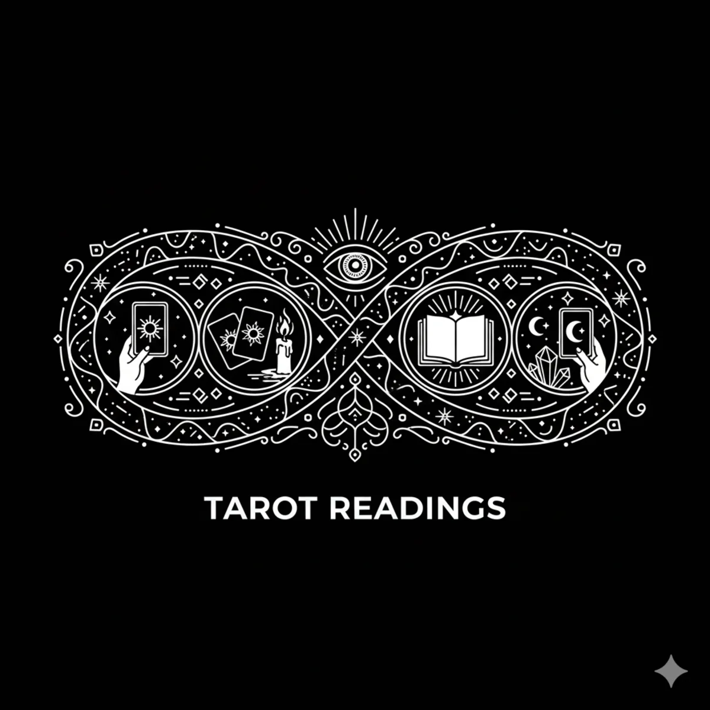

Rider Waite Tarot for Beginners: Complete Guide to Reading the Cards
The Rider Waite Smith (RWS) tarot deck is the most popular and influential tarot deck in the world. Published in 1909 by Arthur Edward Waite and illustrated by Pamela Colman Smith, this deck revolutionized tarot by illustrating every card in the Minor Arcana with full scenes — not just symbols on a background. This made tarot accessible to anyone who could look at a picture and interpret its meaning.
Over a century later, the Rider Waite Smith deck remains the gold standard for beginners and professionals alike. Its imagery is intuitive, its symbolism is rich with esoteric tradition, and its structure is perfectly suited for both divination and personal growth work.
This guide will teach you everything you need to start reading Rider Waite Tarot with confidence: the structure of the deck, the meaning of each card, essential spreads, interpretation techniques, and how to integrate tarot into a daily magical practice.
The Structure of the Rider Waite Smith Deck
The RWS deck contains 78 cards divided into two main sections: the Major Arcana (22 cards) and the Minor Arcana (56 cards).
The Major Arcana (Cards 0-21)
The Major Arcana represents the Fool's Journey — a spiritual pilgrimage through life's major archetypal experiences. Each card is a milestone on this journey:
- 0 - The Fool: Beginnings, innocence, spontaneity, taking a leap of faith
- I - The Magician: Willpower, skill, manifestation, resourcefulness
- II - The High Priestess: Intuition, mystery, the subconscious mind, hidden knowledge
- III - The Empress: Abundance, nurturing, fertility, nature, feminine power
- IV - The Emperor: Authority, structure, stability, leadership, fatherhood
- V - The Hierophant: Tradition, spiritual guidance, education, conformity
- VI - The Lovers: Love, harmony, relationships, values alignment, choices
- VII - The Chariot: Willpower, determination, victory through discipline
- VIII - Strength: Inner strength, courage, compassion, patience
- IX - The Hermit: Solitude, introspection, wisdom, inner guidance
- X - Wheel of Fortune: Cycles, change, fate, turning points, luck
- XI - Justice: Fairness, truth, cause and effect, legal matters
- XII - The Hanged Man: Surrender, new perspectives, pause, sacrifice
- XIII - Death: Transformation, endings, new beginnings, inevitable change
- XIV - Temperance: Balance, moderation, patience, finding harmony
- XV - The Devil: Bondage, materialism, shadow self, addiction, obsession
- XVI - The Tower: Sudden upheaval, revelation, destruction of false structures
- XVII - The Star: Hope, inspiration, serenity, healing, spiritual connection
- XVIII - The Moon: Illusion, fear, the unconscious, intuition, cycles
- XIX - The Sun: Joy, success, vitality, clarity, positive energy
- XX - Judgement: Reckoning, inner calling, absolution, rebirth
- XXI - The World: Completion, accomplishment, fulfillment, wholeness
The Minor Arcana (56 Cards)
The Minor Arcana reflects the everyday aspects of life. It is divided into four suits, each corresponding to a classical element:
- Wands (Fire): Creativity, passion, ambition, career, spiritual will. Ace through Ten plus Page, Knight, Queen, King.
- Cups (Water): Emotions, relationships, intuition, love, dreams. The suit of the heart.
- Swords (Air): Intellect, communication, conflict, decisions, truth. The suit of the mind.
- Pentacles (Earth): Material world, finances, work, health, physical reality. The suit of manifestation.
Each suit follows a narrative arc: the Ace represents the seed of the suit's energy, the numbered cards (2-10) tell a story of growth, challenge, and mastery, and the court cards (Page, Knight, Queen, King) represent personality types or aspects of yourself.
The Fool's Journey: A Roadmap to Mastery
The Fool (card 0) begins the journey as an innocent stepping into the unknown. The Magician gives tools. The High Priestess reveals inner wisdom. The Empress and Emperor provide structure. The Hierophant offers tradition. At the Lovers, a choice must be made. The Chariot demands discipline. Strength requires patience. The Hermit seeks solitude. The Wheel of Fortune brings fate into play. Justice balances the scales.
The Hanged Man asks for surrender. Death transforms everything. Temperance restores balance. The Devil reveals bondage. The Tower shatters illusions. The Star brings hope. The Moon tests faith. The Sun delivers joy. Judgement calls for reckoning. And the World completes the cycle.
Understanding this narrative arc helps you place any card within the larger context of the querent's life journey.
Three Essential Tarot Spreads for Beginners
1. The Three-Card Spread (Past - Present - Future)
The simplest and most versatile spread. Card 1 reveals influences from the past. Card 2 shows the current situation. Card 3 indicates the trajectory or outcome. Use this for daily readings, quick insights, and yes/no follow-ups.
2. The Celtic Cross (10 Cards)
The classic comprehensive spread. Positions cover: (1) present situation, (2) immediate challenge, (3) past foundation, (4) recent past, (5) potential outcome, (6) immediate future, (7) querent's attitude, (8) external influences, (9) hopes and fears, (10) ultimate outcome. Master the three-card spread first, then graduate to the Celtic Cross once you're comfortable with card meanings.
3. The Elemental Spread (5 Cards)
For personal growth readings. Position 1 (Wands): What ignites your passion? Position 2 (Cups): What does your heart desire? Position 3 (Swords): What needs clear thinking? Position 4 (Pentacles): What requires practical action? Position 5 (The Center): What is the integration point?
How to Interpret Reversed Cards
Reversed cards (drawn upside-down) are a common point of confusion for beginners. There are two main approaches:
- Traditional approach: Reversals indicate blocked, delayed, or inverted energy. The Two of Cups reversed might indicate a relationship imbalance instead of partnership.
- Modern approach: Disregard reversals entirely and read all cards as upright, using intuition and context to shade the meaning. This is valid and widely practiced.
Try both approaches and see which resonates. There is no "correct" method — only what produces accurate readings for you.
Building a Daily Tarot Practice
Consistency is the key to tarot mastery. Here is a simple daily practice that takes 5-10 minutes:
- Pull one card each morning. Ask: "What energy should I be aware of today?" Study the card's imagery and note its traditional meaning.
- Journal the card. Write the card name, your first impression, and how it might apply to your day.
- Review at night. Look back at the card you pulled. Did any events match its energy? This builds your personal relationship with each card.
- Study one card per week in depth. Focus on every symbol, color, and number in the card. Research its astrological and Qabalistic correspondences.
After one full cycle of daily practice, you'll have internalized the basic meanings of all 78 cards and developed your own interpretive voice.
Ethical Guidelines for Tarot Reading
Whether reading for yourself or others, follow these ethical principles:
- Never predict death or serious illness. Refer the querent to medical professionals. Tarot is a tool for insight, not medical diagnosis.
- Frame readings in terms of potential, not destiny. Cards show likely trajectories based on current energy, not fixed futures.
- Get consent. Never read for someone without their knowledge and permission.
- Charge appropriately. If reading professionally, set clear boundaries and pricing. Value your skill.
- Keep confidences. What is said in a reading stays in the reading.
Choosing Your First Deck
While the classic Rider Waite Smith deck is the ideal starting point, there are hundreds of RWS-based decks that reinterpret the original imagery in different artistic styles. The key is to choose a deck that speaks to you visually while maintaining enough fidelity to the RWS system that you can learn the traditional meanings. A good RWS-based deck preserves the essential symbolic elements — the pillars on the High Priestess, the lion on Strength, the lightning strike on the Tower — so that traditional interpretations remain applicable.
Our Unofficial Rider Waite Tarot app provides the complete 78-card deck as a digital tool, with built-in card meanings, multiple spread options, and reading journaling — all offline, no ads, no tracking. For practitioners who want the convenience of digital tarot without losing the depth of traditional interpretation.
Read Tarot Anywhere with the Unofficial Rider Waite Tarot
Full 78-card Rider Waite Smith deck on your phone. Includes card meanings, Celtic Cross and Three-Card spreads, plus reading journaling. No ads, no tracking, fully offline.
Get Unofficial Rider Waite Tarot — $2.99100% offline • No ads • No tracking • One-time payment
Connecting Tarot with Other Occult Systems
The RWS deck is deeply connected to the Western esoteric tradition. Each card corresponds to specific astrological signs, planets, Hebrew letters, and paths on the Tree of Life. As you advance, you can layer these correspondences into your readings for deeper insight:
- Astrological correspondences: The Emperor is Aries, Strength is Leo, The Moon is Pisces. Knowing planetary influences adds dimension to interpretations.
- Qabalistic paths: Each Major Arcana card corresponds to a path on the Tree of Life. The Fool connects Kether to Chokmah — pure potential becoming wisdom.
- Elemental dignities: In a spread, consider how suits interact. Too many Swords (Air) can indicate overthinking; too many Cups (Water) can indicate emotional overwhelm.
These layers are optional. Many excellent readers use only the imagery and their intuition. But for those who want depth, the correspondences provide a lifetime of study.
Final Thoughts
The Rider Waite Smith tarot deck is more than a divination tool — it is a mirror for the soul, a map of consciousness, and a companion on the journey of self-discovery. Pamela Colman Smith's illustrations contain layers of meaning that reveal themselves over years of study. Every reading is a conversation between your intuition, the cards, and the universe. Trust the process, practice daily, and the cards will speak.
Your first reading doesn't need to be perfect. Pull a card. Look at the image. Feel what it evokes. That feeling is the beginning of your tarot journey.